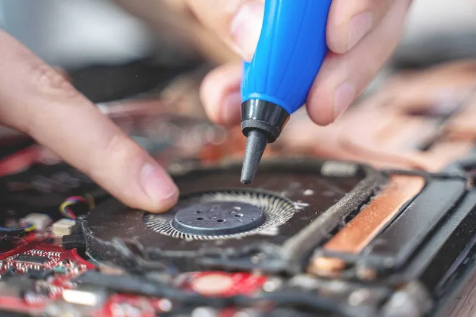

Alguns dos fatores que podem fazer com que a placa de vídeo queime podem ser:

Alteração da voltagem original:
Sobreaquecimento do sistema (quando sentir que o seu computador está muito quente, desligue os programas que mais consomem ou se puder desligue o computador por alguns minutos para o deixar respirar ar fresco). Pó nas saídas de ar (limpe o seu computador, ou fale com um profissional da área caso sinta que ele tem estado a aquecer mais rápido do que quando o comprou). Há tempos, existe um mito na internet de que uma placa de vídeo defeituosa pode voltar a funcionar após colocá-la dentro de um forno e cozinhá-la dentro.

Tempo de vida util da GPU:
Normalmente, é recomendado atualizar as placas gráficas de PC gamers a cada 2 a 4 anos. Esse mesmo período também pode ser usado como referência para a troca do processador. “Processadores da AMD tem performance melhor com placas de vídeo da AMD”; ISSO É MITO. O que faz diferença é o equipamento mais potente e recente, isso sim irá definir qual terá a melhor performance.